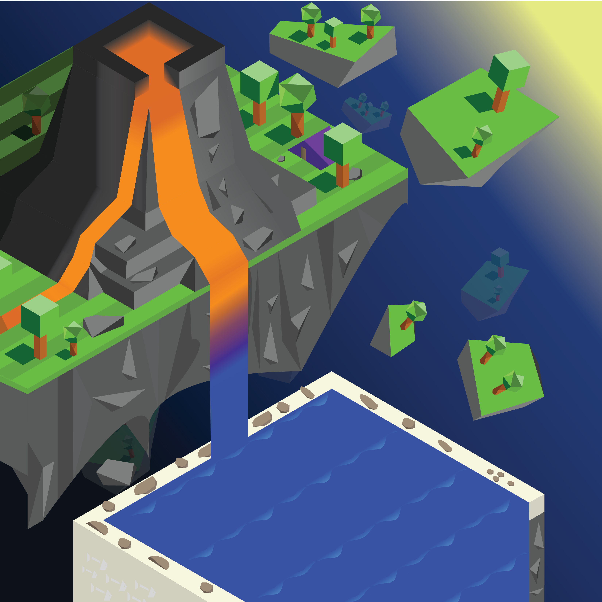
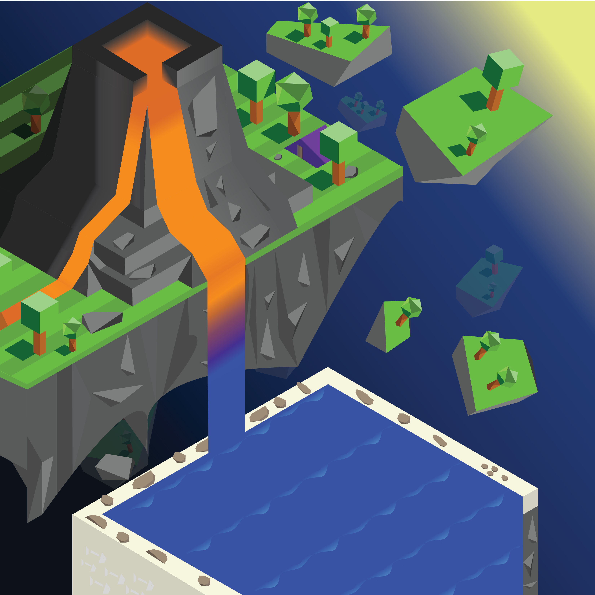
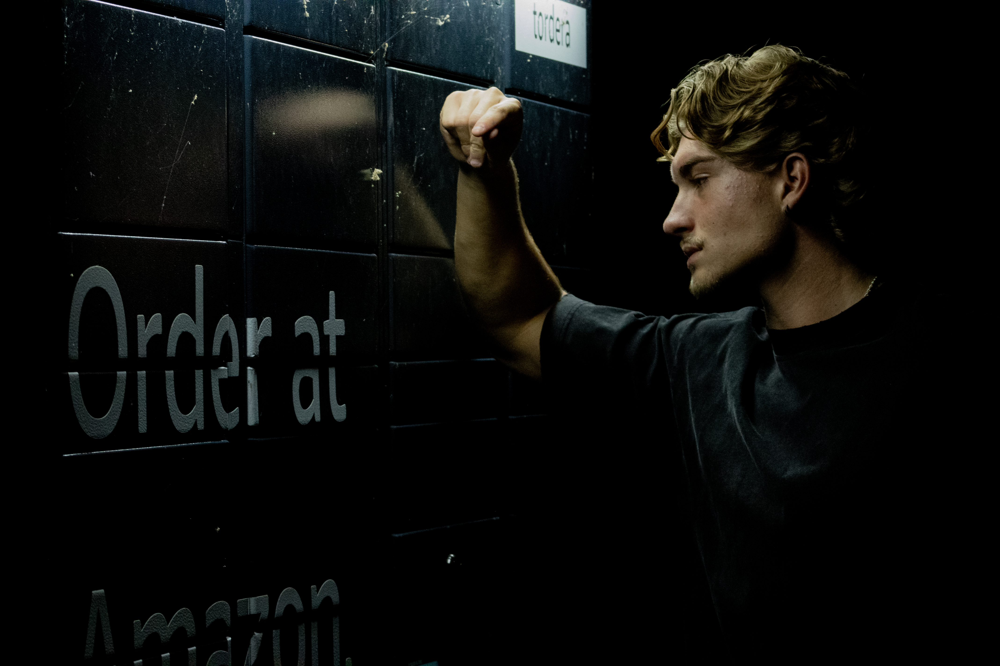
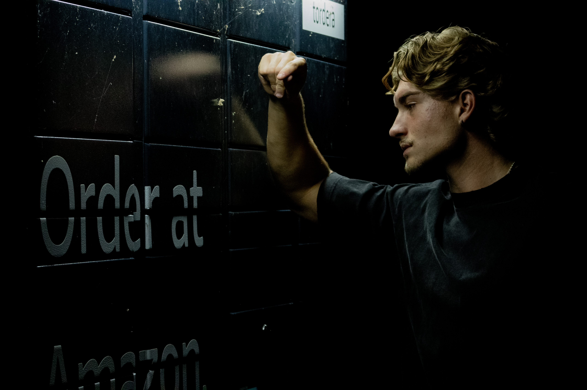

Work Experience:
Housekeeping, Volunteer work at the YMCA kids camp, as well as working as a Ride Operator at Bay Beach Amusement Park.
Softwares/Program Experience:
Proficient in all Adobe softwares, Visual Studio Code, Maya Autodesk (3D Programming Software), and Photography.
 

About:
My name is Tony, I am currently a Junior attending University of Eau Claire, Wisconsin, pursuing a Bachelor's in Graphic Design. Some of my passions and things I like to do in my free time are; Photography, designing isometric environments, re-designing company logos, 3D modeling, and going to the gym and being with friends and company. Some goals I have in mind, is reaching a point in my career where I feel comfortable enough and satisfied with the work I am doing. A major goal of mine would be working for Chelsea Football club, the soccer team I've supported since being a kid, and being a part of their media team.
Contact:
#: 920-632-3371
E-Mail - tony-opoku-owusu@outlook.com